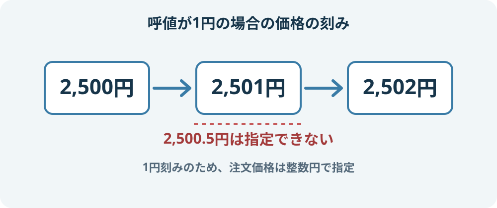

STOCK MARKET / TICK SIZE
呼値の単位とは？株価の刻みと指値注文・スプレッドの関係
株式の注文画面で「2,500円」や「2,501円」といった価格を指定するとき、希望する価格をどの刻み幅で入力できるかは、銘柄や株価水準によって決まっています。この価格の最小刻みが、呼値（よびね）の単位です。呼値は単なる入力ルールではなく、注文できる価格、注文板での優先順位、スプレッドや約定価格にも関係します。
1. 呼値の単位とは
呼値の単位とは、取引所で株式などの注文を出すときに指定できる価格の最小刻み幅です。「ティックサイズ」と呼ばれることもあります。呼値が1円の銘柄なら、注文価格は原則として1円刻みで指定します。呼値が0.5円なら0.5円刻み、0.1円なら0.1円刻みです。
呼値の単位は、売買単位（通常の国内株式では100株など）とは別のルールです。売買単位は何株単位で注文するか、呼値は1株あたりの価格をどの刻みで指定できるかを定めます。
個別株を直接選ぶ投資と、指数に連動する商品を通じて市場全体へ投資する方法は、投資対象の選び方が異なります。両者の違いは個別株投資とインデックス投資の比較で整理しています。

呼値は注文できる価格を制限しますが、株価が必ずその刻み幅ずつ動くという意味ではありません。売買が成立する価格は、買い注文と売り注文の状況、価格優先・時間優先の原則などによって決まります。
2. 現在の東証の呼値の単位
2026年11月23日時点の東証では、株価水準に加えて銘柄区分などに応じて呼値の単位が定められています。価格帯ごとの呼値は次のとおりです。
| 株価の水準 | TOPIX500構成銘柄 | 売買単位1口のETF等 | その他の銘柄 |
|---|---|---|---|
| 1,000円以下 | 0.1円 | 1円 | 1円 |
| 1,000円超〜3,000円以下 | 0.5円 | 1円 | 1円 |
| 3,000円超〜5,000円以下 | 1円 | 1円 | 5円 |
| 5,000円超〜10,000円以下 | 1円 | 1円 | 10円 |
| 10,000円超〜30,000円以下 | 5円 | 5円 | 10円 |
| 30,000円超〜50,000円以下 | 10円 | 10円 | 50円 |
| 50,000円超〜100,000円以下 | 10円 | 10円 | 100円 |
| 100,000円超〜300,000円以下 | 50円 | 50円 | 100円 |
| 300,000円超〜500,000円以下 | 100円 | 100円 | 500円 |
| 500,000円超〜1,000,000円以下 | 100円 | 100円 | 1,000円 |
| 1,000,000円超〜3,000,000円以下 | 500円 | 500円 | 1,000円 |
| 3,000,000円超〜5,000,000円以下 | 1,000円 | 1,000円 | 5,000円 |
| 5,000,000円超〜10,000,000円以下 | 1,000円 | 1,000円 | 10,000円 |
| 10,000,000円超〜30,000,000円以下 | 5,000円 | 5,000円 | 10,000円 |
| 30,000,000円超〜50,000,000円以下 | 10,000円 | 10,000円 | 50,000円 |
| 50,000,000円超 | 10,000円 | 10,000円 | 100,000円 |
TOPIX500構成銘柄とは、TOPIX100とTOPIX Mid400の構成銘柄を合わせた区分です。なお、ETF等の呼値欄は、売買単位が10口以上のETF等にも適用されます。実際の注文では、銘柄・取引市場・売買単位に対応する最新の呼値を証券会社の注文画面や取引所の案内で確認してください。
TOPIX500は株価指数の構成銘柄区分です。日経平均やTOPIXなど、指数そのものの仕組みを先に整理したい場合は、株価指数とは？日経平均・TOPIX・S&P 500の違いも参考になります。
例えば株価2,500円の場合、TOPIX500構成銘柄の呼値は0.5円、それ以外の一般的な銘柄では1円です。株価4,000円の場合は、TOPIX500構成銘柄なら1円、その他の銘柄なら5円となります。同じ株価水準でも銘柄区分によって指定できる価格が異なる点が重要です。
3. 指値注文でどう影響する？
指値（さしね）注文では、買いなら指定価格以下、売りなら指定価格以上での約定を求めます。ただし、呼値の単位に合わない価格は注文できません。
| 例：株価2,500円付近 | 呼値1円の銘柄 | 呼値0.5円の銘柄 |
|---|---|---|
| 2,500円 | 指定できる | 指定できる |
| 2,500.5円 | 指定できない | 指定できる |
| 2,501円 | 指定できる | 指定できる |
| 2,501.5円 | 指定できない | 指定できる |
例えば、買い注文が2,500円、売り注文が2,501円に並んでいるとします。呼値が1円なら、その間に2,500.5円の買い指値を置くことはできません。一方、呼値が0.5円なら、2,500.5円で買い指値を出し、既存の2,500円の買い注文より高い価格で順番を得ることができます。ただし、売り注文が2,500.5円以下に出ていなければ、その注文はすぐには成立しません。
同じ価格に複数の注文がある場合は、原則として先に出された注文が優先されます。呼値が細かいと価格の選択肢が増え、既存注文よりわずかに有利な価格を指定できる一方、注文を出す価格によっては板の順番や約定の可能性も変わります。
4. スプレッド・流動性との関係
スプレッドは、最も高い買い気配と最も安い売り気配の差です。呼値の単位は、スプレッドが何円になるかを直接決めるものではありませんが、注文板に並べられる価格の間隔を決めるため、スプレッドや価格形成に影響します。
例えば、最良買気配が2,999円、最良売気配が3,002円で、呼値が1円なら、気配の差は3円、つまり3ティック分です。このときのSTRは3.0です。STRが小さいほど、スプレッドに対して呼値が相対的に大きく、価格を細かく提示できない状態を示します。反対にSTRが大きいほど、呼値が相対的に細かい状態を示します。
ただし、制度上のSTRは、ある瞬間の板だけで判定するわけではありません。立会時間中の最良売気配と最良買気配の差を、その時点の呼値で割り、時間加重平均して日次STRを算出します。売買停止や特別気配など、気配差を算出できない時間は対象から除かれます。呼値の適切さを、継続的な気配状況から評価する仕組みです。
呼値が粗すぎると、より良い価格を提示する余地がなくなり、投資家の執行コストが高くなる可能性があります。一方、細かすぎると注文が複数の価格に分散し、板が薄くなったり値動きが不安定になったりする可能性があります。東証の制度変更は、銘柄ごとの流動性に対して呼値を適切な水準に調整することを狙っています。
なお、スプレッドや注文板の厚みは、売買高、ニュース、時間帯、市場環境などでも変わります。呼値だけを見て売買コストを判断せず、注文時点の気配と数量を確認してください。売買手数料とスプレッドの違いは、株式の売買手数料とスプレッドの解説で詳しく扱っています。
5. 2027年3月1日の制度変更
東証は2027年3月1日から、現行のTOPIX500構成銘柄かどうかを基準に呼値を分ける方式をやめ、銘柄ごとの流動性をSTR（Spread to Tick Ratio）で評価して呼値テーブルを適用する方式へ変更します。対象は東証に上場する株券です。株価水準ごとの刻み幅そのものも、新しい4種類のテーブルに置き換わります。
この変更は、すべての銘柄の呼値が一律に細かくなるという意味ではありません。流動性に比べて呼値が粗すぎる銘柄では刻みを細かくし、細かすぎる銘柄では刻みを粗くする方向に調整します。従来のTOPIX500区分では同じ区分の銘柄に同じ基準を当てはめていましたが、新制度では銘柄ごとの気配状況を反映します。
6. 変更後の呼値テーブルA・B・C・O
新制度では、株価の価格帯と銘柄に割り当てられたテーブルの組み合わせで呼値が決まります。A・B・Cは流動性に応じた3段階、Oは売買単位が1株・1口の銘柄向けの専用テーブルです。
| テーブル | 名称 | 位置づけ |
|---|---|---|
| A | Active | 超高流動性 |
| B | Basic | 高流動性 |
| C | Calm | 中流動性 |
| O | One Unit | 売買単位1株・1口の銘柄向け |
東証上場株券は原則としてSTRに基づきA・B・Cを適用します。ETF・ETN・レバレッジ商品は、売買単位が1口の銘柄を除き、STRにかかわらずAを適用します。売買単位が1株・1口の銘柄は、円未満の約定が発生しないようOを適用します。Oの対象には一部のETF・ETN・レバレッジ商品、REIT、インフラファンド、優先出資証券などが含まれます。
以下はJPXが公表している2027年3月1日以降の呼値テーブルです。価格帯の上限を含み、上限を超えると次の行の呼値に切り替わります。
| 株価 | A | B | C | O |
|---|---|---|---|---|
| 100円以下 | 0.1円 | 0.1円 | 0.1円 | 1円 |
| 100円超〜500円以下 | 0.1円 | 0.1円 | 0.5円 | 1円 |
| 500円超〜1,000円以下 | 0.1円 | 0.1円 | 1円 | 1円 |
| 1,000円超〜2,000円以下 | 0.2円 | 0.5円 | 2円 | 1円 |
| 2,000円超〜5,000円以下 | 0.5円 | 1円 | 5円 | 1円 |
| 5,000円超〜10,000円以下 | 1円 | 2円 | 10円 | 1円 |
| 10,000円超〜20,000円以下 | 2円 | 5円 | 20円 | 2円 |
| 20,000円超〜50,000円以下 | 5円 | 10円 | 50円 | 5円 |
| 50,000円超〜100,000円以下 | 10円 | 20円 | 100円 | 10円 |
| 100,000円超〜200,000円以下 | 20円 | 50円 | 200円 | 20円 |
| 200,000円超〜500,000円以下 | 50円 | 100円 | 500円 | 50円 |
| 500,000円超〜1,000,000円以下 | 100円 | 200円 | 1,000円 | 100円 |
| 1,000,000円超〜2,000,000円以下 | 200円 | 500円 | 2,000円 | 200円 |
| 2,000,000円超〜5,000,000円以下 | 500円 | 1,000円 | 5,000円 | 500円 |
| 5,000,000円超〜10,000,000円以下 | 1,000円 | 2,000円 | 10,000円 | 1,000円 |
| 10,000,000円超〜20,000,000円以下 | 2,000円 | 5,000円 | 20,000円 | 2,000円 |
| 20,000,000円超〜50,000,000円以下 | 5,000円 | 10,000円 | 50,000円 | 5,000円 |
| 50,000,000円超 | 10,000円 | 20,000円 | 100,000円 | 10,000円 |
例えば株価3,000円の銘柄なら、Aは0.5円、Bは1円、Cは5円です。同じ株価でも、どのテーブルが割り当てられているかで注文できる価格の刻みが変わります。テーブル名は銘柄の業績や投資価値の格付けではなく、呼値の設定区分です。
7. STRによる判定と年次見直し
STRは、最良売気配と最良買気配の差（名目スプレッド）が、呼値の何本分に相当するかを表します。東証は日次STRの中央値について、1.5〜5.0を適切な範囲としています。中央値がこの範囲より小さければ呼値を細かくし、大きければ呼値を粗くする方向に見直します。
| 現在のテーブル | 日次STRの中央値が1.5未満 | 1.5以上5.0以下 | 5.0超 |
|---|---|---|---|
| A | Aのまま | Aのまま | Bへ |
| B | Aへ | Bのまま | Cへ |
| C | Bへ | Cのまま | Cのまま |
| O | STRによるテーブル変更なし | ||
見直しは毎年行われます。評価期間は前年8月から当年4月末までの9か月間で、その期間の日次STRの中央値を使い、原則として毎年8月第1営業日に新しいテーブルを適用します。見直し結果は6月初めを目途にJPXウェブサイトのマーケットニュースなどで公表されます。
ここでいう「中央値」は、9か月間のすべての板情報を単純平均するという意味ではありません。まず各日の立会時間中の気配差を時間加重平均して日次STRを求め、その日次STRを評価期間について並べた中央値でテーブルを判定します。
8. 2027年3月1日の初回適用と銘柄別テーブルの公表
通常の年次見直しとは別に、制度開始時の初回適用テーブルは移行措置として決定されます。JPXの運用資料では、現行の呼値テーブルと、2026年3月から同年11月末までの日次STR値の中央値などを勘案し、2027年1月を目途に銘柄別の適用テーブルを公表するとしています。
したがって、2026年11月23日時点では、A・B・C・Oそれぞれの呼値刻みと判定方法は確認できますが、個々の東証銘柄に初回どのテーブルが割り当てられるかは、まだ公表前です。銘柄別の適用結果を推測して断定することはできません。2027年1月以降にJPXの公表情報を確認してください。
9. 注文前に確認すること
- 取引市場：東証、名証、PTSなど、どの市場へ注文を出すのか確認する。市場によって呼値のルールが異なる場合があります。
- 銘柄区分・売買単位：2027年3月1日以降は、銘柄別のA・B・C・Oの適用テーブルを確認する。
- 株価水準：価格帯によって適用される呼値が変わるため、注文価格に対応する刻みを確認する。
- 注文画面の価格候補：指定したい価格が呼値に合っているか確認する。入力できない場合は、証券会社の案内で理由を確かめる。
- 板とスプレッド：最良気配の価格差だけでなく、その価格に並ぶ注文数量も確認する。
- 制度変更：2027年3月1日以降は新テーブルと銘柄別の割当を確認し、年次見直し後は最新情報に更新する。
注文方法そのものや、証券会社へ支払う売買手数料も合わせて理解すると、実際の取引コストを整理しやすくなります。株式の売買手数料とは？無料条件とスプレッドの注意点もあわせて確認してください。
まとめ
- 呼値の単位は、取引所で注文できる価格の最小刻み幅。
- 適用される刻みは株価水準や銘柄区分などによって異なる。
- 呼値は指値注文の価格選択肢や注文板の価格順位に関係し、スプレッドや約定にも影響し得る。
- 2027年3月1日から東証ではSTRに基づく銘柄別テーブルA・B・C・Oへ移行する。
- 初回の銘柄別割当は2027年1月を目途に公表予定で、以後は原則毎年8月に見直される。
- 実際の注文では、取引市場・銘柄・注文時点の最新の呼値を確認する。
参考資料
- 日本取引所グループ「呼値の単位」 — 現行呼値表、新制度の4テーブル一覧。
- 東京証券取引所「呼値の単位の更なる適正化に伴う運用等の取扱いについて」 — STRの測定、年次見直し、新規上場銘柄、2027年3月の初回移行。
- 東京証券取引所「（参考）STRについて」 — STRの具体例、1.5〜5.0の適正範囲、テーブル変更基準。
- 東京証券取引所「現物市場の更なる機能強化に向けた売買制度の見直しについて」 — 制度変更の背景と目的。
- 日本取引所グループ「売買成立の方法」 — 価格優先・時間優先など売買成立の仕組み。